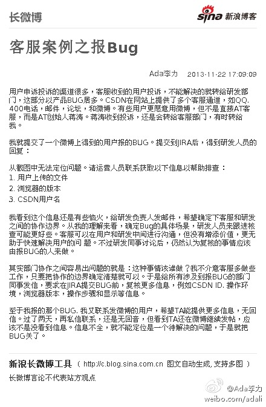

客服案例之报Bug：用户申诉投诉的渠道很多，客服收到的用户投诉，不能解决的就转给研发部门，这部分以产品BUG居多。CSDN在网站上提供了多个客服通道，如QQ, 400电话，邮件，论坛，和微博。有些...文字版>> 网页链接 （新浪长微博>> 网页链接） 
小公司的人得身兼数职，分工作不到那么细。//@rcfans_: 研发部门还是需要拆分一部分为技术支持团队的。技术支持团队再不能快速反馈，就要再拆分为类似于Rapid Change/General Change这样的团队，就像医院有夜班和急诊。@Ada李力:客服案例之报Bug：用户申诉投诉的渠道很多，客服收到的用户投诉，不能解决的就转给研发部门，这部分以产品BUG居多。CSDN在网站上提供了多个客服通道，如QQ, 400电话，邮件，论坛，和微博。有些...文字版>> 网页链接 （新浪长微博>> 网页链接）